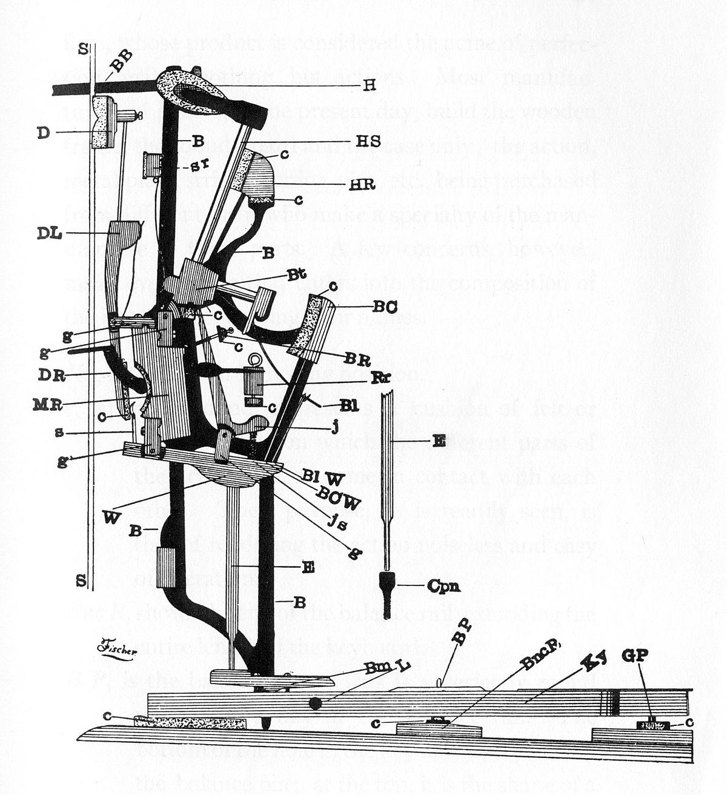
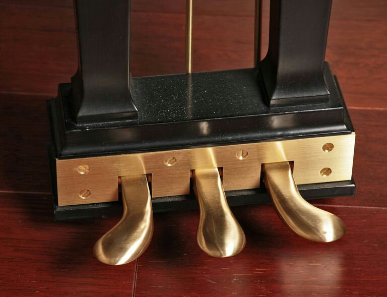

La palabra piano deriva del nombre original en italiano del instrumento, pianoforte (piano: «suave» y forte: «fuerte»), asignado por su primer constructor, Bartolomeo Cristofori: clavicémbalo col piano e forte (literalmente «clavecín con [sonido] suave y fuerte»). Esto se refiere a la capacidad del piano para producir sonidos con diferentes intensidades, dependiendo del peso que se le aplica a las teclas. Esta característica lo diferenciaba de sus predecesores, que solo podían producir un único volumen.
El funcionamiento básico del mecanismo de un piano es el siguiente: cuando una tecla es pulsada, la palanca que está situada en el extremo opuesto se eleva y el macillo asociado a ella se pone en movimiento en dirección a la cuerda que es liberada por el apagador justo antes de la percusión. Tras el golpe del macillo a la cuerda se produce el sonido y acto seguido aquel cae hasta ser recogido por la grapa, también conocida como atrape, a una distancia aproximada de dos centímetros. Al levantar la tecla, esta libera el conjunto de palancas del escape y el macillo vuelve a estar disponible para volver a tocar la cuerda. Si retiramos la presión por completo, todo el sistema vuelve a su estado inicial de reposo, en el que el apagador tiene la misión primordial de interrumpir el sonido.
La caja de resonancia, también denominada mueble, es el recinto cerrado del piano que tiene la finalidad de amplificar o modular el sonido. Es una parte primordial del piano, ya que, además de amplificar y modular el sonido, es un factor decisivo en el timbre del instrumento, siendo importante la calidad de la madera con la que está fabricada, el número de piezas con las que esté construida y su estructura.
La tabla armónica está compuesta por la tabla propiamente dicha, las barras armónicas, los puentes de sonido y los barrajes. La tabla armónica se sitúa debajo y también detrás de las cuerdas del piano. Es una superficie de madera laminada que varía de espesor, desde el centro a los lados, a lo largo de su superficie. Puede ir de los 12 a los 15 milímetros dependiendo de la medida del instrumento y el criterio del fabricante. La tabla está formada por una serie de listones de entre 10 y 15 centímetros de anchura unidos entre sí mediante cola. Es el auténtico elemento de resonancia del instrumento y su función es amplificar el sonido producido por las cuerdas, que a su vez es transmitido a las mismas a través del puente tonal. La calidad y homogeneidad de la madera con la que está fabricada la tabla armónica es de suma importancia. En un piano de cola moderno, suele estar construida generalmente en madera de abeto y tiene un espesor de 8 milímetros, el doble de la de un pianoforte. Se usa la madera del abeto para la fabricación de la tabla armónica del piano y de otros instrumentos porque tiene el mejor cociente entre resistencia mecánica, que permite soportar la enorme presión de las cuerdas, y ligereza, que favorece la captación de las vibraciones más sutiles de las cuerdas. La tabla armónica tiene una ligera curvatura de unos 18 metros de radio, difícilmente apreciable a primera vista, que contribuye a que la tabla resista la presión de las cuerdas y al mismo tiempo se incremente considerablemente la resonancia del instrumento. Las barras armónicas son un conjunto de listones que están fabricados con el mismo material que la tabla armónica, generalmente abeto, que están unidos a la tabla mediante cola por debajo de la misma. Su encolado es en sentido perpendicular a la veta de la tabla para hacer uniforme la rigidez del conjunto. La cantidad de barras armónicas varía entre 8 y 14, en función de la medida del instrumento, y sus dimensiones son de dos centímetros de alto por dos de largo aproximadamente. Las barras más largas se encuentran situadas en el centro de la tabla y tienen un grosor mayor, mientras que las más cortas se sitúan en los extremos y son más delgadas. Los puentes de sonido van encolados en el centro de la tabla y en la parte superior de la misma. Sirven para transmitir la vibración de las cuerdas a la tabla armónica. Su forma es debida a la disposición de las cuerdas sobre ella y a que es necesario que la longitud de estas se incremente desde las notas más agudas a las más graves. Los barrajes son la estructura básica del piano y su finalidad es la de soportar todos sus elementos. Se sitúan debajo de la tabla armónica, a la que van adheridos mediante cola. De ellos dependen tanto la solidez como la duración en el tiempo del instrumento y aportan estabilidad frente a posibles cambios climáticos, tensiones internas, agresiones externas o cualquier otro tipo de deformación.
La tapa superior de la caja tiene una doble función: cerrar el mueble y proyectar el sonido hacia el público. Esta tapa se puede colocar en diversas posiciones según la potencia requerida. En el caso de realizar una actuación como solista, la tapa debe estar ubicada en su posición más alta. En cambio, si se está interpretando una obra acompañando a otros instrumentos, la tapa debe permanecer en su ubicación más baja.
El bastidor es un armazón de barras delgadas que suelen ser de hierro. En el cordal,situado en su extremo posterior, se ajustan las cuerdas, y en el clavijero, situado en el frontal, están las clavijas de afinación. Alrededor de estas se enrolla el otro extremo de la cuerda. Es necesario afinar correctamente cada cuerda. Esto se consigue enroscando el extremo final de cada una de ellas en un eje insertado en el clavijero, obteniendo un tono más agudo o grave según el sentido de giro.
Las cuerdas son el elemento vibratorio que origina el sonido en el piano. Son segmentos formados por un material flexible que permanecen en tensión de modo que puedan vibrar libremente, sin entorpecimiento que provoque una distorsión de la onda acústica. La tensión de las 224 cuerdas puede llegar a alcanzar del orden de las 15 a 20 toneladas-fuerza y depende proporcionalmente de las dimensiones del instrumento. Los bordones son las cuerdas de mayor longitud y pertenecen al registro grave extremo del instrumento. Hay una única cuerda por tecla y están fabricadas en acero, con un contenido del 1% de carbono, y entorchadas con hilos de cobre. Este entorchado tiene la misión de añadir cierto peso y homogeneidad en la vibración de modo que la cuerda alcance la altura sonora deseada, mientras la mantiene lo suficientemente delgada y flexible para tocar. En el registro grave se colocan dos cuerdas por tecla afinadas al unísono y en el registro agudo, tres. Las cuerdas para el registro agudo están fabricadas exclusivamente con acero. La longitud y grosor disminuye proporcionalmente desde el registro grave, cuerdas más largas y gruesas, hasta el registro agudo, de menor grosor y longitud. La longitud de las cuerdas más graves incide proporcionalmente en las dimensiones exteriores del instrumento. Por tanto, una mayor longitud de las cuerdas implica una mayor cola del piano, lo que incrementa la calidad del sonido. Ocurre lo mismo con la altura de la caja del piano de pared. La fabricación de una cuerda para piano se realiza mediante un proceso de trefilado, que consiste en la reducción de la sección de una cuerda de diámetro grueso y hacerla pasar a través de un orificio cónico calibrado practicado en un disco de material más duro que la cuerda. Tras dicho proceso se obtiene una cuerda con un diámetro exactamente calibrado. Al iterar este proceso con agujeros cada vez más pequeños se obtienen otras tantas cuerdas con sendos calibres. Antiguamente, el alambre de latón se trefilaba a través de discos de acero. Las cuerdas de acero actuales se trefilan a través de discos de materiales más duros que el acero, como el diamante o el rubí. Este procedimiento fue inventado en 1819 por Brockedon en el Reino Unido y sigue siendo usado en la fabricación de cuerdas para los pianos modernos.
Prácticamente todos los pianos modernos tienen 88 teclas, 36 negras y 52 blancas. El número de teclas en los teclados se ha incrementado con el tiempo. En el siglo xviii los clavecines tenían poco más de 61 teclas (hasta cinco octavas), mientras que la mayoría de los pianos fabricados desde 1870 tenían 88 teclas. Los pianos modernos tienen un registro de siete octavas y una tercera menor; es decir, desde la-2 hasta do7. Sin embargo, muchos pianos tienen un registro de siete octavas (85 teclas); es decir, desde la-2 hasta la6 y algunos fabricantes amplían su registro hacia alguno de los dos extremos, el agudo o el grave. Por ejemplo, un piano Bösendorfer 225 tiene 92 teclas y un Bösendorfer 290 Imperial tiene 97. Los órganos generalmente tienen 61 teclas por «manual» (parte del órgano que se toca con las manos). El peso de las teclas es un factor muy importante del teclado de un piano. En un piano acústico (de cola o vertical), el peso de las teclas está directamente relacionado con el mecanismo de percusión del macillo, que golpea la cuerda dentro de la caja de resonancia. En un piano electrónico la sensación de peso que tiene lugar en los pianos acústicos es reproducida mediante un mecanismo de martillo debajo de cada tecla.
Un piano moderno tiene tres pedales. A principios del siglo xx, los pianos tenían tan solo el pedal de resonancia y el pedal una corda. Pero en épocas anteriores se experimentó mucho, con registros de laúd, fagot y otros efectos incluso más extravagantes, no siendo raro encontrar pianos antiguos con más de cuatro pedales. Beethoven poseyó un piano Érard con cuatro pedales, uno de ellos partido, lo que hacía un total de cinco.9 En un piano de cola moderno los tres pedales se denominan respectivamente unicordio, tonal y de resonancia. El pedal unicordio o una corda se encuentra a la izquierda y desplaza los macillos hacia un lado, de modo que, según el ajuste que se le dé, los macillos golpean sobre dos de las tres cuerdas y en la zona del fieltro donde habitualmente no lo hacen. El pedal tonal central (también denominado «'pedal de sostenuto»', del italiano «sostenido» que también se encuentra en algunos modelos verticales de Yamaha) sirve para crear el efecto llamado nota pedal, que consiste en mantener durante un tiempo determinado la misma nota (dejándola vibrar sin apagarla, lo cual tiene el mismo efecto, si después de tocar una tecla, a esta se la mantiene apretada) o acorde; a diferencia del pedal de resonancia, la nota pedal no se ve alterada por las que se toquen después. El pedal de resonancia, al ser pisado, libera los apagadores de las cuerdas, lo que permite que la nota siga sonando aunque se haya dejado de pulsar la tecla, añadiendo además una gran cantidad de armónicos de otras cuerdas que vibran por simpatía, aumentando de este modo el volumen sonoro y, en su caso, mezclando notas, acordes y armonías diversas. Usado con destreza, también permite pequeños efectos sutiles de expresión, cantabilidad, fraseo o acentuación. La disposición en un piano vertical es ligeramente diferente. El pedal de aproximación se encuentra a la izquierda, pero en este caso difiere del piano de cola. Al pulsarlo, el mecanismo acerca los macillos a las cuerdas, con lo que, a menor distancia para percutir, menor aceleración al pulsar la tecla, con lo que sencillamente se reduce el volumen sonoro. Al ser pisado el pedal sordina, situado en el centro, se interpone una tela entre los macillos y las cuerdas, lo que reduce enormemente el sonido y permite tocar el piano sin molestar a otras personas. Y, finalmente, el pedal derecho es el de resonancia, el único que es común a los dos tipos de piano. En los verticales, su funcionamiento es exactamente el mismo.
Al igual que muchas otras invenciones, el piano fue fabricado a partir de otros instrumentos. El instrumento musical de cuerda más antiguo que inicia la línea evolutiva del piano es la cítara, un instrumento originario de África y del sudeste de Asia que se remonta a la Edad del Bronce (alrededor del año 3000 a. C.). La cítara era un conjunto de cuerdas tensas dispuestas sobre una tabla que se hacían vibrar mediante los dedos, las uñas o algún objeto punzante. El monocordio fue un instrumento posterior a la cítara, pero tenía leves variaciones respecto a ésta. Estaba construido con una única cuerda mucho más larga que las cuerdas que se empleaban en la cítara, que vibraba sobre una pequeña caja de resonancia de madera. Este instrumento fue utilizado por varios matemáticos a lo largo de la historia para realizar sus estudios, como el griego Pitágoras, que realizó sus estudios sobre las relaciones entre los intervalos musicales, y Euclides, que basó la geometría euclidiana en las divisiones de este instrumento. Más tarde se inventó el salterio, un instrumento construido sobre los principios de la cítara pero con una forma trapezoidal en función de las distintas longitudes de sus cuerdas. La tabla trapezoidal del salterio, mucho más tarde, dio paso al diseño de los primeros clavecines. Se pretendía encontrar algún tipo de mecanismo que hiciera que las cuerdas no estuvieran en contacto con los dedos.10 Se hicieron bastantes experimentos, y uno de ellos fue el clavicordio, un instrumento que vibraba mediante un pequeño clavo o una aguja metálica que era accionada a través de unas teclas que hacían mover la aguja o clavo para que vibrara la cuerda. Después de la creación del clavicordio nació el clave, diferenciado del clavicordio porque para hacer vibrar las cuerdas utilizaba un plectro o la punta de las plumas de las aves.10 Los primeros instrumentos de cuerda percutida fueron los dulcémeles que procedían del santur, un instrumento musical tradicional persa.11 Durante la Edad Media, hubo varios intentos para crear instrumentos de teclado con cuerdas percutidas.12 El primero de ellos fue la zanfona, que tiene origen incierto.13 Del siglo xiv son las primeras referencias al escaque, instrumento poco conocido cuyo mecanismo (descrito en un manuscrito de Henri Arnault de Zwolle) podría anticipar el del piano. En el siglo xvii, los mecanismos de instrumentos de teclado como el clavicordio y el clavecín eran bien conocidos. En un clavicordio las cuerdas son golpeadas por las tangentes, mientras que en un clavecín son presionadas por plumas de ganso. Siglos de trabajo sobre el mecanismo del clave, en particular, han mostrado los medios más eficaces para construir la caja de resonancia, el puente y el teclado.